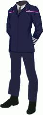
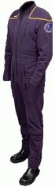
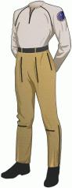
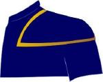
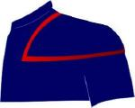

Uniformi di Enterprise |
| Insegne di grado Sezioni Note |
| Ammiraglio (il commodoro ha due bande bianche sui polsi) |
 |
| Ufficiale |  |
| Uniforme da deserto, con i gradi sul colletto |
 |
| Tuta spaziale |
 |
| Abbigliamento intimo |
 |
Le uniformi sono confezionate con tessuto ignifugo (Cease Fire).
Nel 2161 sulla parte sinistra del petto è
applicato il nome su una striscia di tessuto (These Are The Voyages...).
Le insegne di grado sono indossate sul petto, sul lato destro dell'uniforme, tranne che per gli ammiragli che le portano su entrambi i lati dell'uniforme.
I profili colorati sulle spalle variano seconda della sezione di appartenenza:
| Comando e navigazione |  |
| Sicurezza e Ingegneria |  |
| Sezione scientifica e medica |  |
| Ammiragli |  |